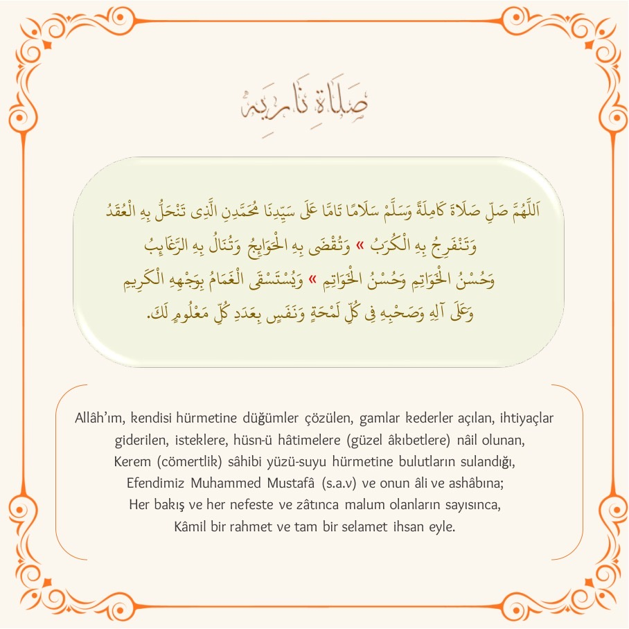
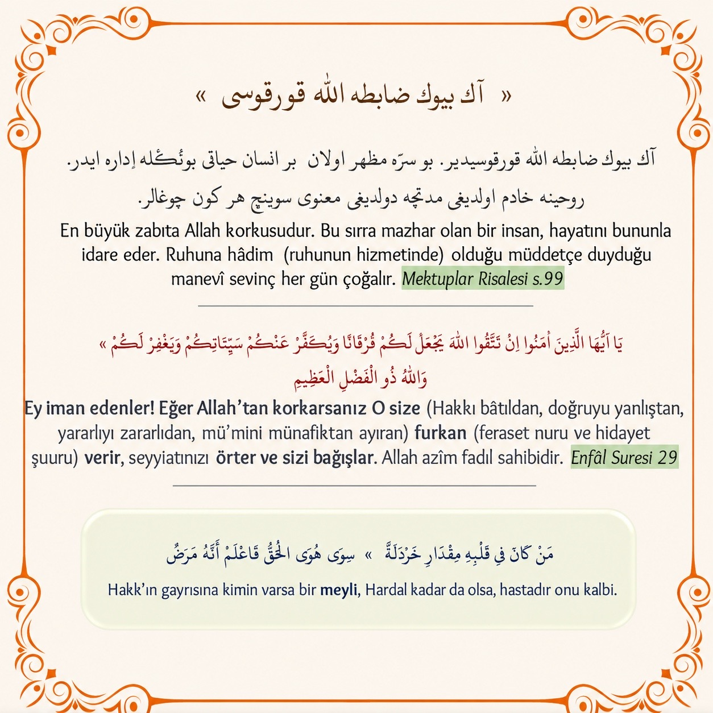
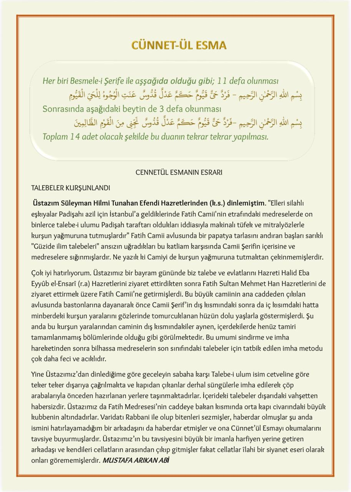
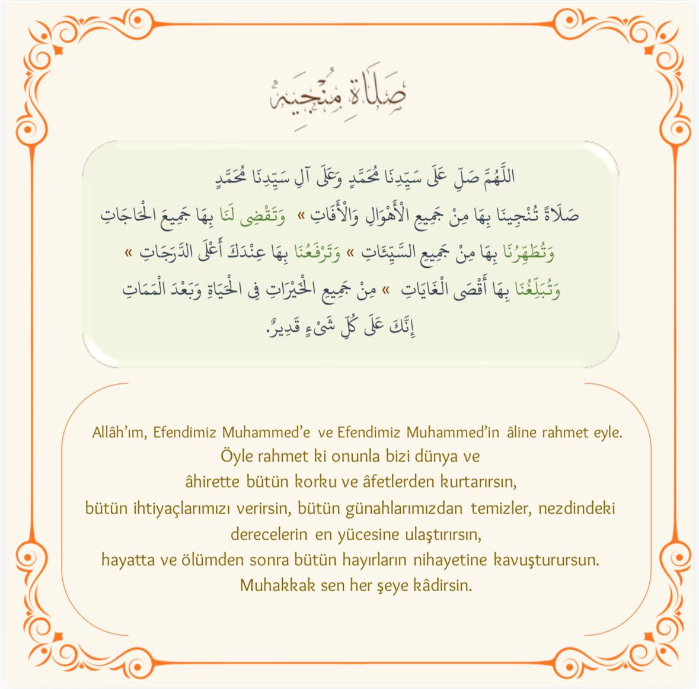
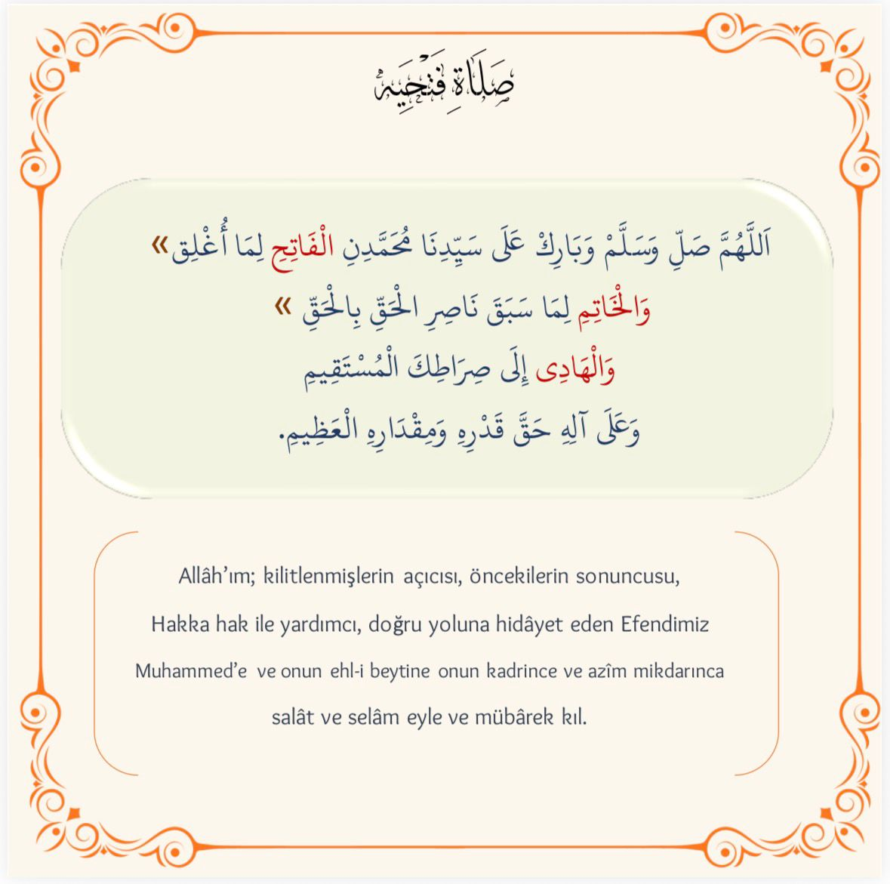

‹
Palavras Favoritas
🔖
Minhas Palavras Favoritas
Configurações
×
Tamanho do texto
A−
100%
A+
Arapça yazı stilleri (15)
⌄
İstediğiniz stile dokunarak Arapça yazılarını anında değiştirebilirsiniz.
Latin içerikler için yazı stilleri (5)
⌄
Türkçe ve Latin içeriklerin yazı stilini buradan seçebilirsiniz.
Brezilya Portekizcesi ses seçenekleri (10)
⌄
Seçtiğiniz ses, kelime telaffuzlarında kullanılacaktır. 🔊 düğmesiyle sesi deneyebilirsiniz.
Malumatlar
×

Malumat 1

Malumat 2

Malumat 3

Malumat 4

Malumat 5
↓ Portekizce Öğreniyorum
×